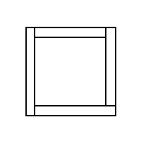
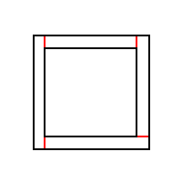
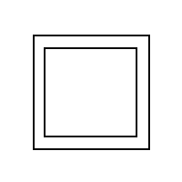
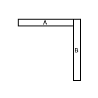
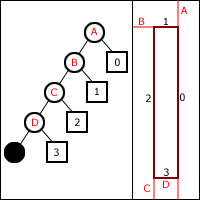
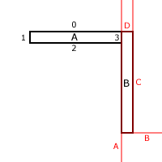
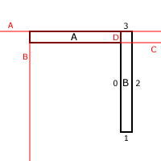
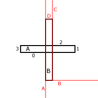
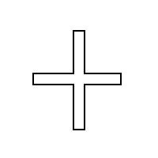

Removing illegal geometry from data imported from quake map files
By Gerald Filimonov
k9megahertz@yahoo.com
One of the cool things about using Quake .map files when writing your own 3d engine is the availability and number of .map editors there are out on the net. This can really cut down the burden of writing your own 3d engine because you don't have to write your own editor to create test maps. While this sounds like a good plan at first, this can turn out to also be a burden as well. Due to the way that quake maps were designed the .map files that describe them need to be parsed and processed to extract the polygons that represent the world. After doing so you end up with a set a polygons that describe and depict the game world in the .map file and then some. If you take a look at the set of polygons you'll soon begin to realize that there are polygons that intersect other polygons, polygons that can never been seen by the viewer, and polygons that face other polygons but lie on the same plane. If your planning on constructing a BSP with this set of polygons then they best were cleaned up otherwise you'll just end up having major problems later on. Its in this document that I plan to address this issue and explain a method to remove all of the "illegal geometry" from the set of polygons. Note: I'm only going to cover the actual removal of the illegal geometry and not the removal of the outfacing polygons that reside in the outside leaves of the BSP, nor am in going to cover the actual parsing and extraction of the polygon data from the .map files.
Ok, now that I've got that boring "this is the reason I'm writing this document" text out of the way, let's get down to business.
First off, quake .map files are made up of brushes. For the sake of simplicity most if not all of my diagrams will be in 2D with a top-down view perspective. Lets take a look at a simple set of polygons that have been extracted from a quake .map file.
Fig1
As you can see our map is made up of four brushes, nothing more than just a simple room. As you can also see we have some illegal geometry in this map. I've highlighted these polygons in red. Note: there are two illegal polygons for every red line, one for each brush that touches each other, these polygons have their normals facing each other.
Fig2
What we wanna do is remove these polygons and end up with the following result.
Fig3
The way you get rid of these polygons is by doing a Union set operation on all of the brushes. We loop through a list of all the brushes and as we come to each one in the list, we do a union operation using this brush and using each of the other brushes in the list. Here's some pseudo code explaining this:
for (brush1=0; brush1<numbrushes; brush1++) { //loop
for (brush2=0; brush2<numbrushes; brush2++) { //loop
if (brush1= =brush2) // don't clip brush with itself
continue;
if (BrushesIntersect(Brush1,Brush2)= =true) //see if brushes intersect, if they do we need
//to clip them, if they don't, move on.
CSGUnionBrushes(brush1,brush2); //clip brush with other brush
}
//brush has now been clipped by all the other brushes so save the remaining polygon fragments
//out to a final list
SavePolygonFragments(brush1);
}
Your actual routine is gonna be a bit more complex that this, but this is the general idea of how it works. You'll probably wanna make a copy of the polygons in brush1 and clip those rather than the original brush because you'll need it to clip the other brushes later.
Ok let's take a closer look at how the CSGUnionBrushes routine works. Let's start off with a simple test case and work our way up. In this test case we have only 2 brushes and they are both touching each other.
Fig4
Now one of the ways you can do CSG operations is by using a BSP tree. This involves calculating a BSP tree for each brush and pushing each of the polygons of the other brush through the BSP tree. Depending on what kind of operation your doing (i.e. Union, Intersection, Subtraction, Difference), you'll either keep the parts of the polygon that end up on the inside or the outside of the brush. In the case of Union, any polygon remnant that ends up inside the brush gets deleted. Now because were dealing with brushes, they have a neat little property of them that will allow us to get away with not having to calculate a BSP tree for each brush. This property is the fact that all brushes are convex. Therefore the BSP tree for any brush will always have the same structure. Take a look at the following BSP tree for a brush.
Fig5
As you can see here, you'll always only have 1 polygon in front of a node and all the rest behind. No matter what kind of brush you use the tree will always have this same structure. Now how does this help us? It means that at anytime we have a fragment of a polygon end up in a leaf or on the front side of a plane, we keep it, anything that's on the back gets pushed down the tree further. If a fragment hits the solid node at the end, it gets eaten by the solid node monster. =)
Back to our simple test case. Here we have two brushes, brush A and brush B. To do a union of these two brushes, we take each polygon of Brush A and clip it against Brush B, anything on the inside gets deleted, anything on the outside gets returned. Take a look at the following diagram, ive numbered the polygons in brush A in black and labled the planes of brush B in red.
Fig6
Now lets take polygon 0 and clip it with Brush B. First off we take polygon 0 and compare it with plane A. As you can see polygon 0 is on the front of plane A so we do nothing and just return polygon A untouched. The same goes for polygons 1 and 2. Polygon 3 is a special case though. It is coplanar with plane A. In this case we compare the normal with the polygon with the normal of the plane. Since they are different, we treat the polygon as if it was on the back side of the plane. This means we have to push the polygon down the tree of brush B farther. The next node we come to is the one that plane B occupies. Comparing polygon 3 with this plane we find that it too lies behind the plane, so a pushin we will go. Next up is a comparison between polygon 3 and plane C. As we can see polygon 3 is behind plane C as well. Pushing down the tree deeper we come to plane D and again the polygon is on the back side, so with a final push we push polygon 3 in the solid node at the end of the tree. Here the solid node monster gobbles up the polygon and it is never seen again.
Wow, we just eliminated one of our illegal polygons! Pretty neat huh? Well don't get too excited yet, we still have a lot of work do to, and I guess that means I got more writing to do as well =).
Since were only dealing with 2 brushes we only are gonna clip Brush A with one other brush, Brush B. If we had 4 brushes in our map that all intersected each other we would have clipped the polygons of Brush A with Brush B and then taken these clipped polygons and clip them even further with Brush C and clipped them even further still with Brush D. After the clipping with Brush D we will have clipped all of the illegal geometry off of Brush A. We add these remaining polygons to a master list and repeat the procedure with the next brush.
Well now that we've clipped Brush A with Brush B, its time to clip Brush B with Brush A. I've drawn a diagram to help us
Fig7
Starting off with polygon 0 we compare it against plane A. Its behind plane A so we push it down the back of the tree and move on to the next plane. Coming to plane B, polygon 0 is on the backside so we keep on pushin', coming to plane C, polygon 0 is.....uh oh...Houston we have a problem! Polygon 0 seems to span plane C. What we need to do here is split polygon 0 in to two smaller fragments, one that's on the front of the plane and one that's on the back. This is where things start to get confusing and messy. Since the front part is on the front side of Plane C that means that were gonna keep it. But what about the back part? Well we take it and push it down back side to be compared against Plane D. Since this fragment is coplanar with plane D we have compare the normals. If they are the same, well have to treat this as a special case which ill get into later, but since they are different, we give the fragment a final push down the backside to the solid node where it gets eaten by the solid node monster and is deleted. We've now eliminated both of the illegal polygons!.
Now im gonna stop right here for a second and say that using linked lists and using a recursive function makes this pretty straightforward to implement. In the above example we had a polygon that got split into two smaller fragments, only one of which was returned as a keeper, but in a bit well have a polygon case where we'll end up with 2 fragments that need to be returned. Now the good thing about using linked lists here is that you can simply chain the fragments together and just return the head fragment and add it to master list and at the same time add all the fragments to the list. Basically adding a linked list to a linked list. =)
Ok, let's keep moving. You can see from fig7 that polygon 1 ends up on back of planes A and B, but once we hit C the polygon ends up on the front, so its a keeper.
Polygon 2 is on the backside of Planes A and B but spans plane C. So we split polygon 2 into two fragments, the front fragment automatically gets returned but the back fragment has to be pushed down further. The back fragment gets pushed to D, where it's found to be on the front of D so it too gets returned. We return the fragment up a level in recursion, link it to the front fragment, then return the front fragment with the back one piggybacked on it all the way back up. Now there's a trick you can do here to reduce your polycount a bit. If a polygon gets split, but nether fragment gets deleted you can just return the original polygon. I do this in my program, and it works quite nicely. =)
Polygon 3 is coplanar with A. Now this gets a little tricky and I'm still working out the details of how this all works, but basically the logic goes like this: If you run into a coplanar polygon on a brush and you haven't clipped the brush against itself (which doesn't happen because of the continue statement) then you keep any fragment that is on the front of a coplanar plane, and get rid of the back, other wise you send the fragment that is on the front down the back anyway to be clipped further. You do this to clip coplanar polygons with each other. Now I'm not sure how it works, I haven't worked it out on paper yet, but it works. I know it works because I had to cheat and peek at the qbsp source and see how Carmack did it. =) So here's the updated pseudo code:
for (brush1=0; brush1<numbrushes; brush1++) { //loop
//copy the faces in brush1 in to a temp list
CopyFacesFromBrushToList(brush1,templist1);
overwrite=false;
for (brush2=0; brush2<numbrushes; brush2++) { //loop
if (brush1= =brush2) { //dont clip brush with itself
overwrite=true; //later brushes will now overwrite
continue;
}
if (BrushesIntersect(Brush1,Brush2)) //see if brushes intersect, if they do we need
//to clip them, if they dont, move on.
for (looppoly=0; looppoly < brush->numpolys; looppoly++) {
poly=AllocatePolygon();
CopyPolygon(poly,looppoly);
fragments=CSGClipPolygon(poly,brush2->polylist,overwrite);
}
}
//brush has now been clipped by all the other brushes so save the remaining polygon fragments
//out to a final list
SavePolygonFragments(brush1);
}
I hope you followed that, if not, re-read it and play with it until you do, otherwise the rest of the document will be more difficult to understand.
Ok, I'm gonna show you one final test case and then turn you loose on your own. Let's look at the following diagram. This is probably the one case you've been having the most trouble with.
Fig9
First we start off in the thick of it with polygon 0 spanning plane A. We split this line into two fragments and recurse with the back fragment pushing it down the tree to plane B. Here the fragment falls on the back side of plane B so we push the fragment down even farther to plane C. Here at plane C the fragment is again spanning the plane. We split the fragment yet again and recurse down further with the back fragment. This back fragment arrives at plane D's node. We compare the fragment and the plane and find that the fragment is on the back side of D. Since the back side of D is a solid node, the solid node monster gets lucky and snags himself a fine polygon fragment meal. So we pop back up a recursion level and return the front fragment that we got on plane C's node, return that up to plane B's node and then right on up again to plane A's node where we have another front fragment, we link the one we returned to the end of the one at plane A and then return the head fragment with the other fragment piggybacked on it. We repeat this procedure with polygons 1,2, and 3 of Brush A, and then well do the process over again with polygons 0,1,2, and 3 of Brush B clipping them against the planes of Brush A. After all is said and done we should end up with the final set of polygons as shown here
Fig10
Rather than give a full source code listing I'm just going to list the two main functions that are needed to perform this procedure. I've commented them pretty good so they should be self-explanatory, if not just drop me a line and ill gladly answer any questions you have. First up I wrote a CSGFaces() function. It's listing is as follows:
int CSGFaces()
{
Brush3d *b1=NULL;
Brush3d *b2=NULL;
Polygon3d *polylist1=NULL;
Polygon3d *polylist2=NULL;
Polygon3d *frags=NULL;
Polygon3d *looppoly=NULL;
Polygon3d *poly=NULL;
int brushnum=0;
int overwrite;
for (b1=brushset->list; b1; b1=b1->next) {
printf("Brushnum = %d\n",brushnum);
brushnum++;
polylist1=NULL;
//make a copy of the faces in brush b1, cause we dont wanna goof with the originals
CopyFacesToList(b1,&polylist1);
overwrite=false;
//clip all the polygons in polylist1 by all the planes in brush b2
for (b2=brushset->list; b2; b2=b2->next) {
if (b1= =b2) {
overwrite=true;
continue;
}
//see if brushes intersect
int i=0;
if ( (b1->min.x > b2->max.x) || (b1->max.x < b2->min.x)) {
i++;
}
if ( (b1->min.y > b2->max.y) || (b1->max.y < b2->min.y)) {
i++;
}
if ( (b1->min.z > b2->max.z) || (b1->max.z < b2->min.z)) {
i++;
}
if (i>0)
continue;
//brushes have now been determined to intersect
//loop thu each polygon in polylist1 and clip it
//by each of the planes in the intersecting brush
//keeping the part that falls on the front of the plane
for (looppoly=polylist1; looppoly; looppoly=looppoly->next) {
//allocate a new polygon and copy it cause we dont wanna destroy our orignal
//well need it later when its called to be used as a clipping plane.
poly=AllocatePolygon();
CopyPolygon(poly,looppoly);
//Clip out polygon with the linked list of planes and return a linked list
//of fragments
frags=CSGClipPolygon (&poly,&b2->polylist,overwrite);
//add these fragments to polylist2
AddPolygonToList(&polylist2,&frags);
}
//free up our original list
if (polylist1)
FreePolygonList(polylist1);
//copy the new list to the original list which will be used again and clipped
//by another brush
polylist1=polylist2;
polylist2=NULL;
}
//at this point the copy polygons of brush b1 have all been clipped by
//all the other brushes, so add them to the final master list
AddPolygonToList(&finallist,&polylist1);
}
return 1;
}
Next up we have the CSGClipPolygon function:
Polygon3d* CSGClipPolygon (Polygon3d *poly,Polygon3d *planepoly, int clip)
{
Polygon3d *retfrags=NULL;
Polygon3d *frontfrag=NULL;
Polygon3d *backfrag=NULL;
Plane3d plane;
MakePlaneFromPoly(&plane,planepoly);
int side=ClassifyPoly(&plane,poly);
switch( side ) {
case PCS_FRONT:
//pretty simple here, any polygon fragment thats on the front of a plane
//gets returned
return poly;
break;
case PCS_BACK:
//if we have more planes to compare against, send the fragment down the tree farther
//if we dont, the fragment will end up in a solid node and get eaten by the solid
//node monster
//can the back frag be pushed further?
if (planepoly->next) { //yes
retfrags=CSGClipPolygon (poly,planepoly->next, clip);
return retfrags;
}
else { //no
DeletePolygon(&poly); //fragment gets eaten by the solid node monster
poly=NULL;
return NULL; //nothing to return =(
}
break;
case PCS_SPANNING:
//first off we split the polygon into two fragments
//the front part gets returned automatically so we dont need to worry about it
//the back part does need to be dealt with tho
//we push the back frag down the tree farther where it could possibly get split up
//even more
//we compare the results of the push with the original back fragment,
//if they are the same that means that the backfragment WAS NOT split up more
//and we can just return the original
//if they are different, that means that the back fragement WAS split up more
//in this case we link the results of the push to the front fragment
//and return the front fragment with the rest piggybacked on it
SplitPoly(&plane,poly,&frontfrag,&backfrag);
//can the back frag be pushed further?
if (planepoly->next) { //back frag CAN be pushed further
retfrags=CSGClipPolygon (backfrag,planepoly->next,clip);
//was back frag divided more?
if (retfrags!=backfrag) { // yes
DeletePolygon(&poly); //delete the original polygon
poly=NULL;
frontfrag->next=retfrags; //piggyback the back fragments on to the front
return frontfrag; //and return them
}
else { // no
DeletePolygon(&backfrag); //delete the front and back fragments
DeletePolygon(&frontfrag);//cause if u put them together u end up with poly
backfrag=frontfrag=NULL;
return poly; //so just return poly
}
}
else { //back frag CANNOT be pushed further
DeletePolygon(&poly); //since the backfrag ends up in a solid node
//it gets eaten by the solid node monster
//this means that the original poly cant be returned so
//it gets deleted
DeletePolygon(&backfrag); //since the back frag got eaten, delete it
poly=NULL;
backfrag=NULL;
return frontfrag;//only thing left to return is the front frag
}
break;
case PCS_COINCENDENT:
//polygon is coincendent with the plane
//compare the normals
//if the polygon normal is the same as the plane, and clip hasnt been set yet
//just return the polygon
if ((poly->PolyNormal.x= =planepoly->PolyNormal.x) &&
(poly->PolyNormal.y= =planepoly->PolyNormal.y) &&
(poly->PolyNormal.z= =planepoly->PolyNormal.z)) {
if (!clip)
return poly;
}
//if we get here, either the polygons normal differed from the plane
//or clip wasnt set to true
//either way if we can push the polygon down the tree further, do so, if not, delete it
//can we go further?
if (planepoly->next) { //yes
retfrags=CSGClipPolygon (poly,planepoly->next, clip);
}
else { //no
DeletePolygon(&poly);
poly=NULL;
return NULL;
}
break;
}
return retfrags;
}
As you can see it's quite a beast.
Well I hope this document helps give you a better understanding of how to remove the illegal geometry from imported .map files. I'm sure I could have done a much better job on this document, possibly by explaining things a bit better, or by drawing more detailed diagrams, but this isn't too bad for a days work. Again, if you have any questions, comments, suggestions, flames, and/or ideas you can just send them to /dev/null. Weeeeelllllll, ok, Ill let you send them to me I guess =)